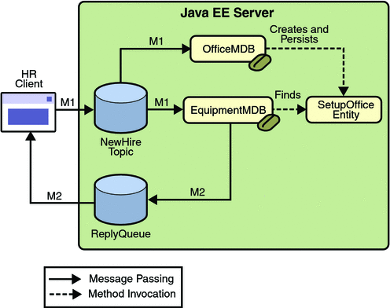

A Java EE Application That Uses the JMS API with an Entity
This section explains how to write, compile, package, deploy, and run a Java EE application that uses the JMS API with an entity. The application uses the following components:
An application client that both sends and receives messages
Two message-driven beans
An entity class
This section covers the following topics:
Writing the Application Components for the clientmdbentity Example
Building, Deploying, and Running the clientmdbentity Example Using NetBeans IDE
Building, Deploying, and Running the clientmdbentity Example Using Ant
You will find the source files for this section in the directory tut-install/javaeetutorial5/examples/jms/clientmdbentity/. Path names in this section are relative to this directory.
Overview of the clientmdbentity Example Application
This application simulates, in a simplified way, the work flow of a company’s human resources (HR) department when it processes a new hire. This application also demonstrates how to use the Java EE platform to accomplish a task that many JMS client applications perform.
A JMS client must often wait for several messages from various sources. It then uses the information in all these messages to assemble a message that it then sends to another destination. The common term for this process is joining messages. Such a task must be transactional, with all the receives and the send as a single transaction. If not all the messages are received successfully, the transaction can be rolled back. For a client example that illustrates this task, see A Local Transaction Example.
A message-driven bean can process only one message at a time in a transaction. To provide the ability to join messages, a Java EE application can have the message-driven bean store the interim information in an entity. The entity can then determine whether all the information has been received; when it has, the entity can report this back to one of the message-driven beans, which then creates and sends the message to the other destination. After it has completed its task, the entity can be removed.
The basic steps of the application are as follows.
The HR department’s application client generates an employee ID for each new hire and then publishes a message (M1) containing the new hire’s name, employee ID, and position. The client then creates a temporary queue, ReplyQueue, with a message listener that waits for a reply to the message. (See Creating Temporary Destinations, for more information.)
Two message-driven beans process each message: One bean, OfficeMDB, assigns the new hire’s office number, and the other bean, EquipmentMDB, assigns the new hire’s equipment. The first bean to process the message creates and persists an entity named SetupOffice, then calls a business method of the entity to store the information it has generated. The second bean locates the existing entity and calls another business method to add its information.
When both the office and the equipment have been assigned, the entity business method returns a value of true to the message-driven bean that called the method. The message-driven bean then sends to the reply queue a message (M2) describing the assignments. Then it removes the entity. The application client’s message listener retrieves the information.
Figure 32-2 illustrates the structure of this application. Of course, an actual HR application would have more components; other beans could set up payroll and benefits records, schedule orientation, and so on.
Figure 32-2 assumes that OfficeMDB is the first message-driven bean to consume the message from the client. OfficeMDB then creates and persists the SetupOffice entity and stores the office information. EquipmentMDB then finds the entity, stores the equipment information, and learns that the entity has completed its work. EquipmentMDB then sends the message to the reply queue and removes the entity.
Figure 32-2 A Java EE Application: Client to Message-Driven Beans to Entity
Writing the Application Components for the clientmdbentity Example
Writing the components of the application involves the following:
Coding the Application Client: HumanResourceClient.java
The application client program, clientmdbentity-app-client/src/java/HumanResourceClient.java, performs the following steps:
Injects ConnectionFactory and Topic resources
Creates a TemporaryQueue to receive notification of processing that occurs, based on new-hire events it has published
Creates a MessageConsumer for the TemporaryQueue, sets the MessageConsumer’s message listener, and starts the connection
Creates a MessageProducer and a MapMessage
Creates five new employees with randomly generated names, positions, and ID numbers (in sequence) and publishes five messages containing this information
The message listener, HRListener, waits for messages that contain the assigned office and equipment for each employee. When a message arrives, the message listener displays the information received and determines whether all five messages have arrived. When they have, the message listener notifies the main program, which then exits.
Coding the Message-Driven Beans for the clientmdbentity Example
This example uses two message-driven beans:
clientmdbentity-ejb/src/java/EquipmentMDB.java
clientmdbentity-ejb/src/java/OfficeMDB.java
The beans take the following steps:
They inject MessageDrivenContext and ConnectionFactory resources.
The onMessage method retrieves the information in the message. The EquipmentMDB’s onMessage method chooses equipment, based on the new hire’s position; the OfficeMDB’s onMessage method randomly generates an office number.
After a slight delay to simulate real world processing hitches, the onMessage method calls a helper method, compose.
The compose method takes the following steps:
It either creates and persists the SetupOffice entity or finds it by primary key.
It uses the entity to store the equipment or the office information in the database, calling either the doEquipmentList or the doOfficeNumber business method.
If the business method returns true, meaning that all of the information has been stored, it creates a connection and a session, retrieves the reply destination information from the message, creates a MessageProducer, and sends a reply message that contains the information stored in the entity.
It removes the entity.
Coding the Entity Class for the clientmdbentity Example
The SetupOffice class, SetupOffice.java, is an entity class. The entity and the message-driven beans are packaged together in an EJB JAR file. The entity class is declared as follows:
@Entity
public class SetupOffice implements Serializable {The class contains a no-argument constructor and a constructor that takes two arguments, the employee ID and name. It also contains getter and setter methods for the employee ID, name, office number, and equipment list. The getter method for the employee ID has the @Id annotation to indicate that this field is the primary key:
@Id public String getEmployeeId() {
return id;
}The class also implements the two business methods, doEquipmentList and doOfficeNumber, and their helper method, checkIfSetupComplete.
The message-driven beans call the business methods and the getter methods.
The persistence.xml file for the entity specifies the most basic settings:
<persistence>
<persistence-unit name="clientmdbentity">
<jta-data-source>jdbc/__default</jta-data-source>
<class>eb.SetupOffice</class>
<properties>
<property name="toplink.ddl-generation"
value="drop-and-create-tables"/>
</properties>
</persistence-unit>
</persistence>
Creating Resources for the clientmdbentity Example
This example uses the connection factory jms/ConnectionFactory and the topic jms/Topic, both of which you used in A Java EE Application That Uses the JMS API with a Session Bean. It also uses the JDBC resource named jdbc/__default, which is enabled by default when you start the Application Server.
If you deleted the connection factory or topic, you can create them again using targets in the build.xml file for this example. Use the following commands to create the resources:
ant create-cf ant create-topic
Building, Deploying, and Running the clientmdbentity Example Using NetBeans IDE
To build, deploy, and run the application using NetBeans IDE, do the following:
Start the Application Server, if it is not already running.
Start the database server as described in Starting and Stopping the Java DB Database Server, if it is not already running.
In NetBeans IDE, choose Open Project from the File menu.
In the Open Project dialog, navigate to tut-install/javaeetutorial5/examples/jms/.
Select the clientmdbentity folder.
Select the Open as Main Project check box and the Open Required Projects check box.
Click Open Project.
Right-click the clientmdbentity project and choose Build.
This task creates the following:
An application client JAR file that contains the client class and listener class files, along with a manifest file that specifies the main class
An EJB JAR file that contains the message-driven beans and the entity class, along with the persistence.xml file
An application EAR file that contains the two JAR files along with an application.xml file
Right-click the project and choose Undeploy and Deploy.
Right-click the project and choose Run.
This command returns a JAR file named clientmdbentityClient.jar and then executes it.
The output of the application client in the Output pane looks something like this:
PUBLISHER: Setting hire ID to 25, name Gertrude Bourbon, position Senior Programmer PUBLISHER: Setting hire ID to 26, name Jack Verdon, position Manager PUBLISHER: Setting hire ID to 27, name Fred Tudor, position Manager PUBLISHER: Setting hire ID to 28, name Fred Martin, position Programmer PUBLISHER: Setting hire ID to 29, name Mary Stuart, position Manager Waiting for 5 message(s) New hire event processed: Employee ID: 25 Name: Gertrude Bourbon Equipment: Laptop Office number: 183 Waiting for 4 message(s) New hire event processed: Employee ID: 26 Name: Jack Verdon Equipment: Pager Office number: 20 Waiting for 3 message(s) New hire event processed: Employee ID: 27 Name: Fred Tudor Equipment: Pager Office number: 51 Waiting for 2 message(s) New hire event processed: Employee ID: 28 Name: Fred Martin Equipment: Desktop System Office number: 141 Waiting for 1 message(s) New hire event processed: Employee ID: 29 Name: Mary Stuart Equipment: Pager Office number: 238
The output from the message-driven beans and the entity class appears in the server log, wrapped in logging information.
For each employee, the application first creates the entity and then finds it. You may see runtime errors in the server log, and transaction rollbacks may occur. The errors occur if both of the message-driven beans discover at the same time that the entity does not yet exist, so they both try to create it. The first attempt succeeds, but the second fails because the bean already exists. After the rollback, the second message-driven bean tries again and succeeds in finding the entity. Container-managed transactions allow the application to run correctly, in spite of these errors, with no special programming.
You can run the application client repeatedly.
Undeploy the application after you finish running the client. To undeploy the application, follow these steps:
Click the Services tab.
Expand the Servers node.
Expand the Sun Java System Application Server node.
Expand the Applications node.
Expand the Enterprise Applications node.
Right-click clientmdbentity and choose Undeploy.
To remove the generated files, right-click the clientmdbentity project and choose Clean.
Building, Deploying, and Running the clientmdbentity Example Using Ant
To create and package the application using Ant, perform these steps:
Start the Application Server, if it is not already running.
Start the database server as described in Starting and Stopping the Java DB Database Server.
Go to the following directory:
tut-install/javaeetutorial5/examples/jms/clientmdbentity/
To compile the source files and package the application, use the following command:
ant
The ant command creates the following:
An application client JAR file that contains the client class and listener class files, along with a manifest file that specifies the main class
An EJB JAR file that contains the message-driven beans and the entity class, along with the persistence.xml file
An application EAR file that contains the two JAR files along with an application.xml file
To deploy the application and run the client, use the following command:
ant run
Ignore the message that states that the application is deployed at a URL.
The program output in the terminal window looks something like this:
running application client container. PUBLISHER: Setting hire ID to 25, name Gertrude Bourbon, position Senior Programmer PUBLISHER: Setting hire ID to 26, name Jack Verdon, position Manager PUBLISHER: Setting hire ID to 27, name Fred Tudor, position Manager PUBLISHER: Setting hire ID to 28, name Fred Martin, position Programmer PUBLISHER: Setting hire ID to 29, name Mary Stuart, position Manager Waiting for 5 message(s) New hire event processed: Employee ID: 25 Name: Gertrude Bourbon Equipment: Laptop Office number: 183 Waiting for 4 message(s) New hire event processed: Employee ID: 26 Name: Jack Verdon Equipment: Pager Office number: 20 Waiting for 3 message(s) New hire event processed: Employee ID: 27 Name: Fred Tudor Equipment: Pager Office number: 51 Waiting for 2 message(s) New hire event processed: Employee ID: 28 Name: Fred Martin Equipment: Desktop System Office number: 141 Waiting for 1 message(s) New hire event processed: Employee ID: 29 Name: Mary Stuart Equipment: Pager Office number: 238
The output from the message-driven beans and the entity class appears in the server log, wrapped in logging information.
For each employee, the application first creates the entity and then finds it. You may see runtime errors in the server log, and transaction rollbacks may occur. The errors occur if both of the message-driven beans discover at the same time that the entity does not yet exist, so they both try to create it. The first attempt succeeds, but the second fails because the bean already exists. After the rollback, the second message-driven bean tries again and succeeds in finding the entity. Container-managed transactions allow the application to run correctly, in spite of these errors, with no special programming.
Undeploy the application after you finish running the client:
ant undeploy
To remove the generated files, use the following command in the clientmdbentity, clientmdbentity-app-client, and clientmdbentity-ejb directories:
ant clean